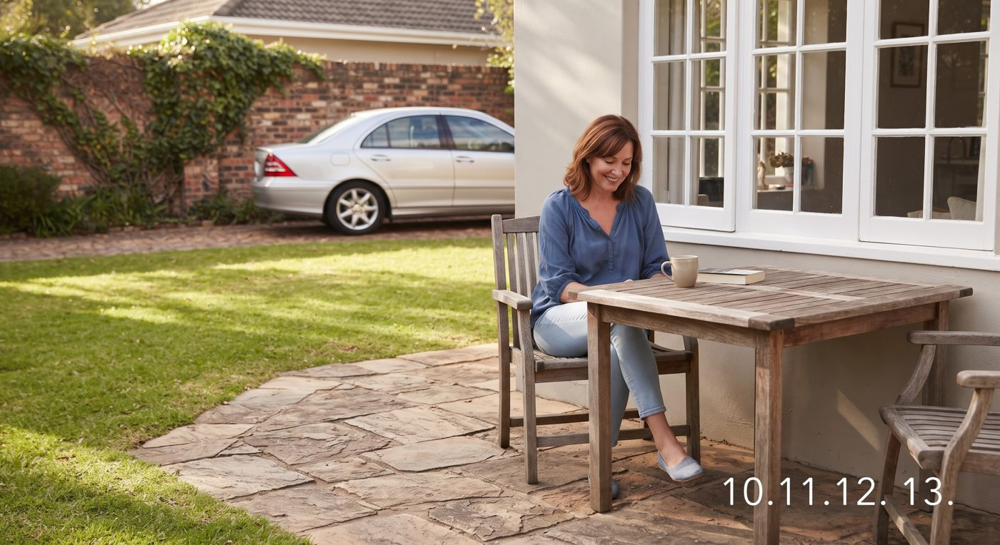

![It is daytime, and the room is bright. This is a large indoor shooting range. The floor is grey and white terrazzo, with red lines and red-and-white lines on it. A long row of glass windows faces a green grass shooting field outside. The windows above have the numbers 1 to 13 on them. On the right side of the picture, two young athletes sit in wheelchairs. One wears a black shooting suit and sits at lane 11. The other wears a red and black shooting suit and sits at lane 13. They have their backs to the camera, and they hold rifles and aim out of the windows. The athletes at lanes 7 and 9 sit on chairs and aim their rifles. On the left side of the picture, behind these athletes, a woman sits on a blue stool. There is some equipment on the table in front of her.](images/img1_round0.jpg)
Image 1, Loop A, Round 1
Adult, Chair Other, Grass, Table, Vehicle, Window, 10. 11. 12. 13
Show the picture (Image 1, Loop A, Round 1)

Ask about this picture (Image 1, Loop A, Round 1)
- Is there a wheelchair, a white cane or tactile paving?
- No, none of these are in the picture. The woman is sitting on a wooden chair on a stone floor.
- What is the person doing?
- She is sitting alone at a table outside and smiling. There is a cup and a book in front of her.
- How are the people connected?
- There is only one person in the picture, so there are no other people.
![Machine description from the next round: On a bright, sunny day, three men aim rifles from a covered concrete shooting range toward a sunlit grassy field with distant targets. In the foreground and middle stalls, numbered 13 and 11, two men sit in wheelchairs beside open gun cases and spotting scopes, holding their rifles aimed outward. Further down the line, a third man sits on a wooden chair, also aiming a rifle out into the field. To the left, a woman in a dark t-shirt and jeans sits on a blue stool at a small table, looking down and writing on papers.](images/img1_B_r1.jpg)
![Machine description from the next round: On a sunny day at an outdoor shooting range, three men sit in a row under a covered concrete shelter, aiming rifles across a wide grassy field toward distant targets. The two men in the foreground sit in wheelchairs at numbered concrete tables, while the third man further down the line sits in a wooden chair. Open black rifle cases and shooting equipment, including a spotting scope on a tripod, rest on the tables in front of them. Behind the shooters to the left, a woman with her hair in a ponytail sits on a blue stool at a small wooden desk, writing on a sheet of paper.](images/img1_B_r2.jpg)
![Machine description from the next round: On a sunny day under the covered concrete shelter of an outdoor shooting range, three men sit in a row at concrete benches aiming scoped rifles out across a wide grassy field. The two men in the foreground sit in wheelchairs wearing dark long-sleeved shirts, while the third man further back sits on a wooden chair wearing a khaki t-shirt and jeans. Open black gun cases, small green boxes, and a spotting scope on a tripod rest on and beside the numbered shooting tables. Behind the shooters on the left, a woman with her hair in a ponytail sits on a blue stool at a small wooden desk, writing on a sheet of paper.](images/img1_B_r3.jpg)
![Machine description from the next round: On a bright, sunny day at a covered outdoor shooting range, three men wearing ear protection sit in a row at concrete benches, aiming scoped rifles toward a wide grassy field. The man in the foreground is seated in a black wheelchair, while the two men beside him sit on wooden chairs. Behind them to the left, a woman with her hair in a ponytail sits on a blue plastic stool at a small wooden table, writing on a sheet of paper. A spotting scope on a tripod, green ammunition boxes, open black gun cases, and spent shell casings are visible around the concrete shooting area.](images/img1_B_r4.jpg)
![Machine description from the next round: In this daytime illustration of an outdoor shooting range, four people are under a covered wooden pavilion overlooking a sunny, grassy field lined with distant targets. Three men wearing ear protection, t-shirts, and jeans sit at concrete benches, aiming scoped rifles toward the field. The man in the foreground sits in a manual wheelchair wearing a white shirt and a baseball cap, while the two men further down the line sit on wooden chairs. Behind them on the left, a woman with a ponytail sits on a blue stool at a small wooden table writing on paper, with green ammunition boxes, black gun cases, a spotting scope on a tripod, and spent shells scattered on the concrete floor.](images/img1_B_r5.jpg)
![Machine description from the next round: On a sunny day, three men sit at concrete benches under a covered wooden shelter at an outdoor shooting range, aiming scoped rifles toward paper targets across a grassy field. All three wear earmuffs, t-shirts, and jeans; the man in the foreground sits in a manual wheelchair, while the two men further back sit on wooden chairs. Behind them to the left, a woman with her hair in a ponytail sits on a blue stool at a small wooden table, writing on a sheet of paper. On the concrete floor and a wooden bench in the foreground are a spotting scope on a tripod, black gun cases, green ammunition boxes, and scattered spent shell casings.](images/img1_B_r6.jpg)
![Machine description from the next round: On a bright, sunny day, three men sit in a row under a covered wooden shelter at an outdoor shooting range, aiming scoped rifles across a sunlit grassy field toward distant targets. All three men wear T-shirts, jeans, and ear protection; the man closest to the camera sits in a manual wheelchair at a concrete shooting bench, while the two men further down the line sit on wooden chairs. Behind them to the left, a woman with her hair in a ponytail sits on a blue stool at a small wooden table, writing on a sheet of paper with ear protection resting around her neck. Spent shell casings are scattered across the concrete floor, and a wooden bench in the lower left foreground holds a spotting scope, green ammunition boxes, and an open black gun case.](images/img1_B_r7.jpg)
![It is daytime. On a zebra crossing in a city street, four people walk in a line along the dotted tactile paving. The first two men both wear white coats and black trousers. The first man holds a white cane in his right hand, and the tip of the cane touches the tactile paving. The second man wears sunglasses and a white coat, and he holds a red and white cane in his left hand. The third person is a woman in a cream-colored down jacket and black trousers, with a small white bag across her body. Of the fourth person, we can only see one hand and one leg. Their hand rests on the woman's shoulder. In the background, there is a black car, green trees on both sides of the road, a blue road sign and some buildings.](images/img2_round0.jpg)
![Machine description from the next round: During the day on a city street, two men walk to the left along yellow tactile paving beside a crosswalk. Both wear short-sleeved white tops over black long-sleeved shirts, black pants, and black shoes, and each holds a white cane with a red tip. The man in back wears dark sunglasses and rests his right hand on the shoulder of the man in front. Behind them, a woman in a cream puffer jacket walks in the opposite direction near a black car, while other pedestrians walk along a tree-lined sidewalk bordered by multi-story buildings.](images/img2_B_r1.jpg)
![Machine description from the next round: During the daytime, two East Asian men walk to the left across yellow tactile paving on a wide city sidewalk. Both wear matching white polo shirts over black long-sleeved tops, black pants, and black shoes, and each holds a white cane with a red tip in his right hand. The man in the back wears dark sunglasses and rests his right hand on the left shoulder of the man in front of him. Behind them, a woman in a beige puffer coat and numerous other pedestrians in jackets walk past bare trees, multi-story buildings, and a black car near a crosswalk.](images/img2_B_r2.jpg)
![Machine description from the next round: During the day, two men wearing matching white polo shirts over black long-sleeved shirts, black pants, and black shoes walk from left to right along a wide city sidewalk. Both men hold white canes with red tips in their right hands, and the man in the back, who wears dark sunglasses, rests his left hand on the shoulder of the man in front. They walk across intersecting rows of yellow tactile paving. In the background, pedestrians in winter coats walk past storefronts and bare trees lining the street, while a black car stops near a crosswalk on the right.](images/img2_B_r3.jpg)
![Machine description from the next round: Two East Asian men walk to the right across yellow tactile paving on a wide city sidewalk during the day. Both wear white polo shirts over black long-sleeve shirts, black pants, and black shoes, and each holds a white cane with a red tip. The man in the back wears dark sunglasses and rests his left hand on the shoulder of the man in front. Behind them, pedestrians in winter coats and scarves walk past storefronts with Korean signs, while bare trees and a black car line the street to the right.](images/img2_B_r4.jpg)
![Machine description from the next round: On a bright winter day, two East Asian men walk to the right along a yellow tactile paving strip on a wide city sidewalk. Both men wear white polo shirts over black long-sleeved shirts, black pants, and black shoes, and each holds a white cane with a red tip. The man behind wears dark sunglasses and rests his left hand on the right shoulder of the man in front. In the background, pedestrians in dark winter coats and scarves walk past buildings with Korean signs on the left, while bare trees, street poles, and a road with a black car line the right.](images/img2_B_r5.jpg)
![Machine description from the next round: Two East Asian men wearing matching white polo shirts over black long-sleeved shirts, black pants, and black shoes walk forward side by side on a wide city sidewalk. Both men hold white canes with red tips, and the man on the right, who wears dark sunglasses, rests his right hand on the other man's shoulder. To their left, a yellow tactile paving strip runs along the sidewalk past storefronts with Korean signs and several pedestrians dressed in heavy black winter coats. On their right, bare trees, utility poles, and a metal railing separate the sunlit sidewalk from a street with cars under a bright daytime sky.](images/img2_B_r6.jpg)
![Machine description from the next round: Two East Asian men walk side-by-side toward the camera along a wide city sidewalk on a sunny day, each holding a white cane with a red tip. Both men wear matching white polo shirts over black long-sleeved shirts, black pants, and black shoes, and the man on the right wears dark sunglasses while resting his right hand on the other man's shoulder. They walk beside a yellow tactile paving strip, bordered on the left by storefronts with Korean signs and on the right by a metal railing and a street with moving cars. In the background, bare trees line the road and several pedestrians in long black puffer coats walk along the sidewalk.](images/img2_B_r7.jpg)